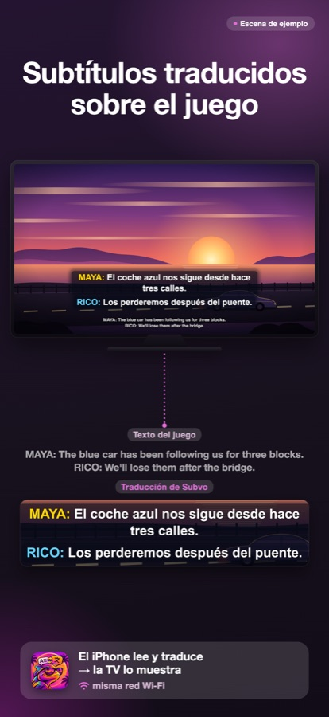
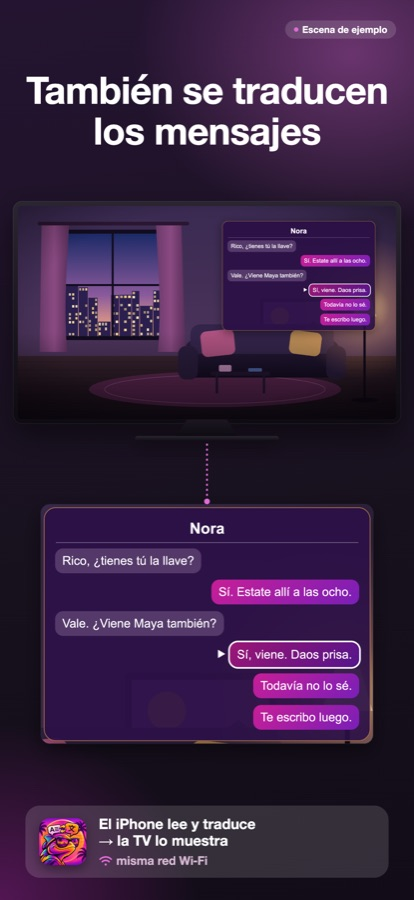
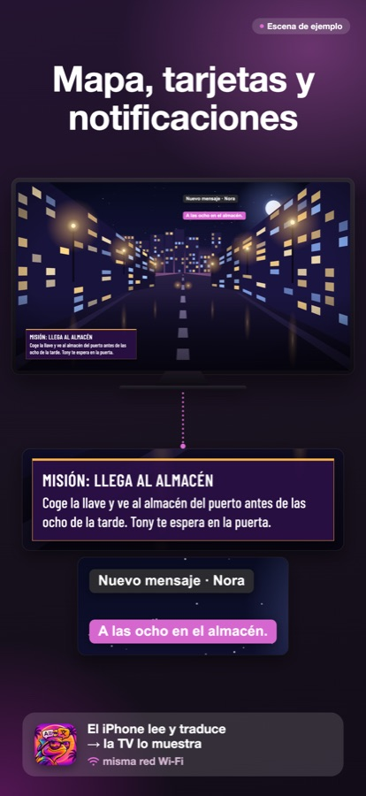
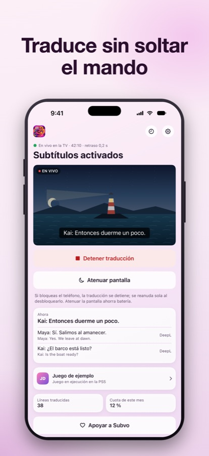
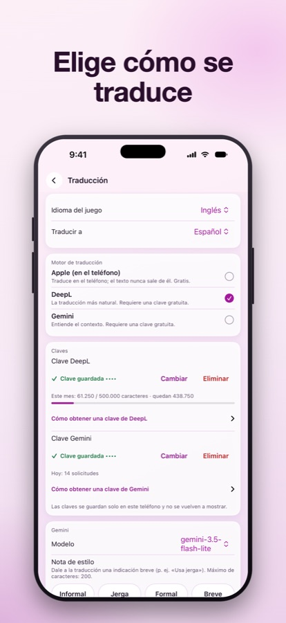
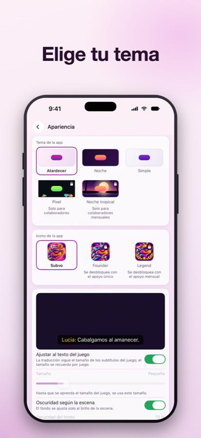

Subvo
SubvoEl texto del juego, en la TV y en tu idioma.
Subvo lee en el iPhone el texto de tu juego de PS5, lo traduce y muestra la traducción en la TV, justo encima del juego. No hace falta soltar el mando.
Gratis y sin anuncios. iPhone, PlayStation 5 y TV Samsung o LG.

No solo subtítulos
Además de los diálogos, en los juegos compatibles también traduce los mensajes del teléfono del juego, las noticias, las tarjetas de misión y las notificaciones que aparecen en la esquina.
Diálogos
El nombre de quien habla conserva su color del juego y la traducción tapa el subtítulo original.

Mensajes del teléfono
Las conversaciones del teléfono del juego se traducen en el mismo lugar de los bocadillos.

Tarjetas y notificaciones
También se traducen las tarjetas de misión y de mapa, los mensajes que entran por un lado y las pistas de la esquina.
De la consola a la TV en tres pasos
El iPhone se conecta a la consola
A tu propia PS5, mediante Remote Play. Inicias sesión en tu cuenta de Sony en la propia página de Sony; Subvo nunca ve tu contraseña.
Lee el texto y lo traduce
La lectura se hace en el propio teléfono. Para traducir usa la traducción de Apple en el dispositivo o, si quieres, tu propia clave de DeepL o Gemini.
Lo muestra en la TV
La traducción aparece sobre el juego en la app Subvo TV, en la misma red Wi-Fi. El teléfono te ayuda a instalar la app de la TV.
MAYA: The blue car has been following us for three blocks.
RICO: We'll lose them after the bridge.
MAYA: El coche azul nos sigue desde hace tres calles.
RICO: Los perderemos después del puente.
Traducción sin esperas
Para algunos juegos se descarga sola una traducción ya preparada (al turco). Las líneas que están en el paquete llegan al instante y sin internet. El paquete de Grand Theft Auto VI tiene más de 738 000 líneas y también existe en árabe.
En los demás juegos e idiomas traduce el motor que elijas. Hay 12 idiomas de destino.
Antes de empezar
- Tu propia PlayStation 5 y tu cuenta de PlayStation.
- Una smart TV Samsung (Tizen) o LG (webOS).
- Teléfono, consola y TV en la misma red Wi-Fi.
- iOS 26 para la traducción en el dispositivo. En versiones anteriores de iOS necesitas tu propia clave de DeepL o Gemini.
¿No tienes PS5? Prueba una escena de ejemplo con «Ver cómo funciona» en la app.
Tus datos se quedan contigo
- Subvo no tiene servidores; no se envían datos al desarrollador.
- Sin anuncios, análisis ni seguimiento.
- El inicio de sesión de PlayStation y la clave de emparejamiento solo se guardan en el llavero del teléfono.
- La traducción es gratis y está totalmente abierta. Si quieres apoyar la app, a cambio solo desbloqueas una insignia, temas e iconos.
Tú eliges el aspecto
El tamaño del texto, el color, el fondo y la posición se cambian en Ajustes. La app está en siete idiomas.



Cualquiera puede ver el código
Subvo es una app de código abierto con licencia AGPL-3.0. El código fuente y la información de la licencia están en GitHub.
¿Dudas o problemas?
Para preguntas, problemas o sugerencias: subvo2026@gmail.com
Si adjuntas una grabación de Ajustes › Avanzado › «Informar de un problema», será más fácil solucionarlo. Indica también el modelo de tu teléfono, la versión de iOS y la marca de tu TV.
- ¿Qué necesito? Un iPhone (iOS 16 o posterior), una PS5 y una smart TV en la misma red Wi-Fi.
- ¿Cómo se traduce? Algunos juegos tienen un paquete de traducción ya preparado. En los demás se usa la traducción de Apple en el dispositivo (iOS 26 o posterior) o tu propia clave de DeepL o Gemini.
- ¿Adónde van mis datos? No se envía ningún dato al desarrollador. Más detalles en la política de privacidad (en inglés).
- ¿Cómo gestiono una suscripción? En el iPhone: Ajustes › Cuenta de Apple › Suscripciones. Las compras de apoyo son voluntarias; todas las funciones de la app son gratis.